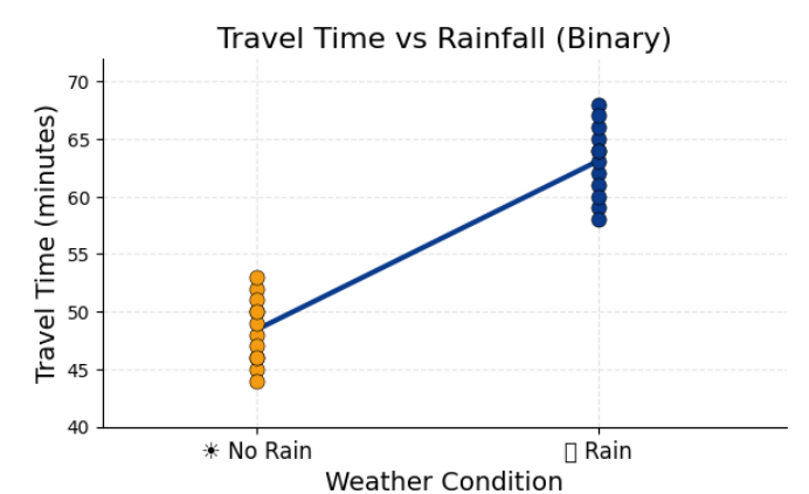
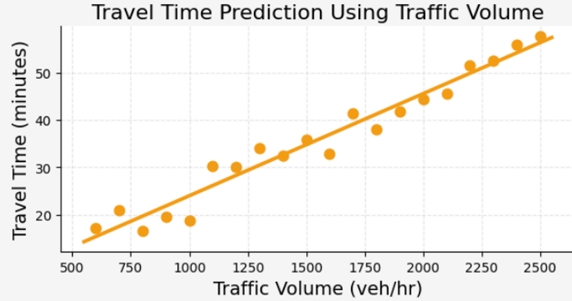
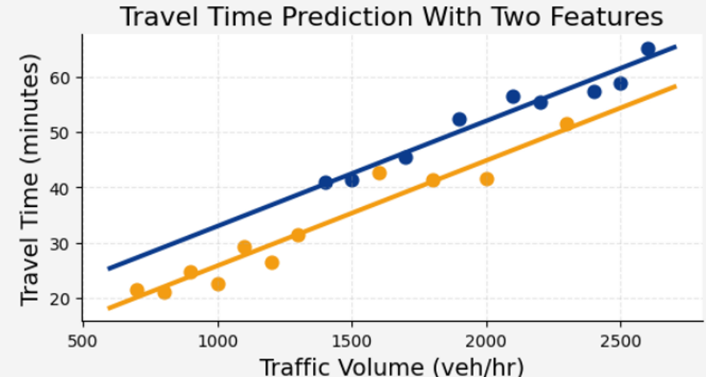
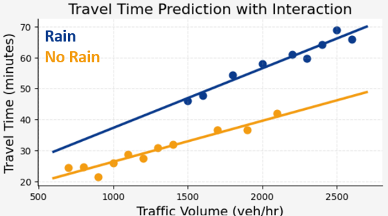

LINEAR
REGRESSION
Introduction to Machine Learning
Introduction
Linear Regression is one of the most fundamental statistical techniques used to model the relationship between a dependent variable and one or more independent variables.
It estimates the best-fitting linear relationship that minimizes prediction errors using the Least Squares Method.
Regression analysis is widely applied in transportation engineering, economics, finance, environmental science, healthcare, and machine learning for prediction, explanation, and trend analysis.
Regression Equation
Linear regression is a supervised* algorithm that learns to model a dependent variable, y, as a function of some independent variables, xi, by finding a line that best "fits" the data.
*Supervised algorithms predict a specific value based on historical data.
The general multiple linear regression equation is
| Symbol | Meaning |
|---|---|
| Y | Dependent Variable (the thing we are trying to predict) |
| X₁...Xₖ | Independent Variables |
| β₀ | Intercept |
| β₁...βₖ | Regression Coefficients aka Weights (These are the foundations of our model) |
| ε | Irreducible Error in our model (a term that collecs together all the unmodeled parts of our data) |
Coefficients
Regression coefficients indicate the expected change in the dependent variable for every one-unit increase in an independent variable while keeping all other predictors constant.
Linear Regression Models

Regression Model with Binary Feature
Uses a binary (0 or 1) independent variable to estimate the effect of two categories on a continuous outcome.

Regression Model with Continuous Feature
Uses a continuous independent variable to predict changes in a continuous dependent variable.

Multivariate Regression Model
Uses two or more independent variables to predict a single continuous dependent variable.

Regression Model with Interaction Terms
Includes interaction terms to determine whether the effect of one independent variable on the dependent variable changes depending on the value of another independent variable.
Explanation of the Linear Regression Models
3. Multivariate Regression Model
Typically, travel time depends on more than one explanatory variable.
In this case, travel time is modeled as a function of both traffic volume (continuous variable) and weather condition (binary).
Intercept (6.74)
Represents the predicted travel time when traffic volume is zero and there is no rainfall.
Traffic Volume Coefficient (0.0190)
Indicates that travel time increases by 0.019 minutes for every additional vehicle per hour while holding rainfall constant.
Rain Coefficient (7.16)
Indicates that rainy weather increases the travel time by
approximately 7.16 minutes while keeping traffic volume constant.
If there are two road segments carrying the same traffic volume, they are expected to differ by about 7.16 minutes if one experiences rainfall.
Statistical Analysis
| Statistic | Purpose |
|---|---|
| R² | Explained Variance |
| Adjusted R² | Compare Models |
| F-Test | Overall Model Significance |
| t-Test | Coefficient Significance |
| p-value | Hypothesis Testing |
| Confidence Interval | Coefficient Precision |
| VIF | Multicollinearity |
| Durbin-Watson | Autocorrelation |
| Breusch-Pagan | Homoscedasticity |
| Shapiro-Wilk | Residual Normality |
Application
Linear regression has extensive applications in transportation engineering, including travel time prediction, traffic flow estimation, speed prediction, crash frequency modeling, pavement deterioration forecasting, transit performance evaluation, travel demand forecasting, fuel consumption analysis, and intelligent transportation systems.